Mariage
Du bouquet de la mariée à la décoration de la salle.
- Bouquet de mariée, boutonnières
- Centres de table, arches, église
- Décoration de voiture
fleuriste artisan
Votre fleuriste à Folelli, en Casinca. Bouquets, compositions originales, fleurs de mariage et de deuil : chaque création est pensée et montée à la main.
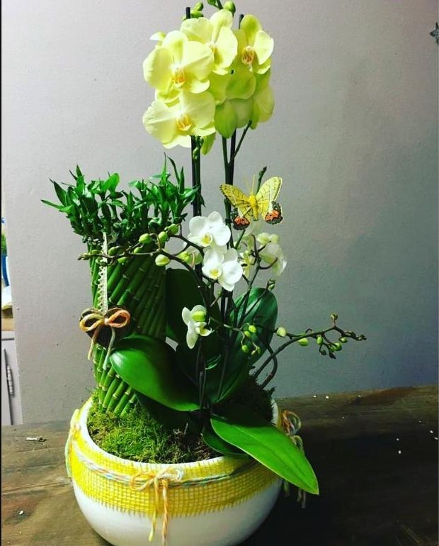
Chez Poème de Fleurs, on ne vend pas de bouquets tout faits. On écoute l'occasion, la personne, les couleurs qu'elle aime, puis on compose. Roses, orchidées, fleurs de saison et plantes se mêlent à des matières naturelles : jute, osier, bois, dentelle.
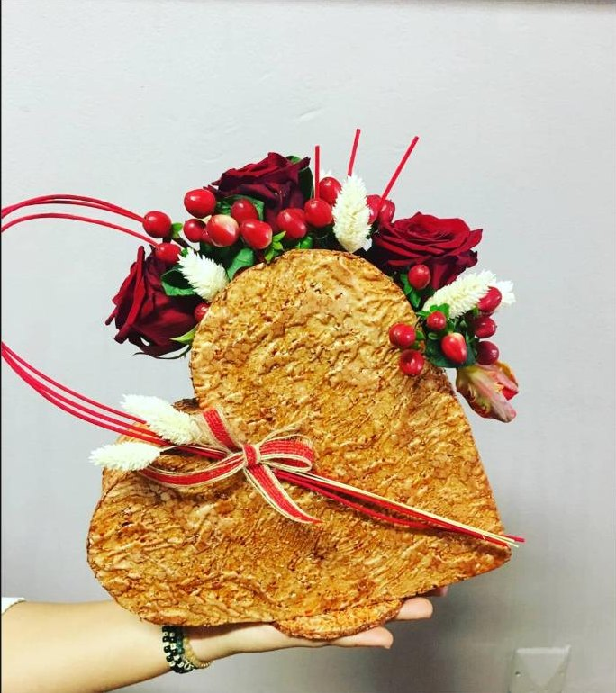
Le résultat : des pièces uniques, qu'on ne retrouve nulle part ailleurs. Toutes nos créations sont réalisées sur commande, dans notre boutique de Folelli. Un appel suffit pour préparer la vôtre.
Des fleurs composées comme un poème.
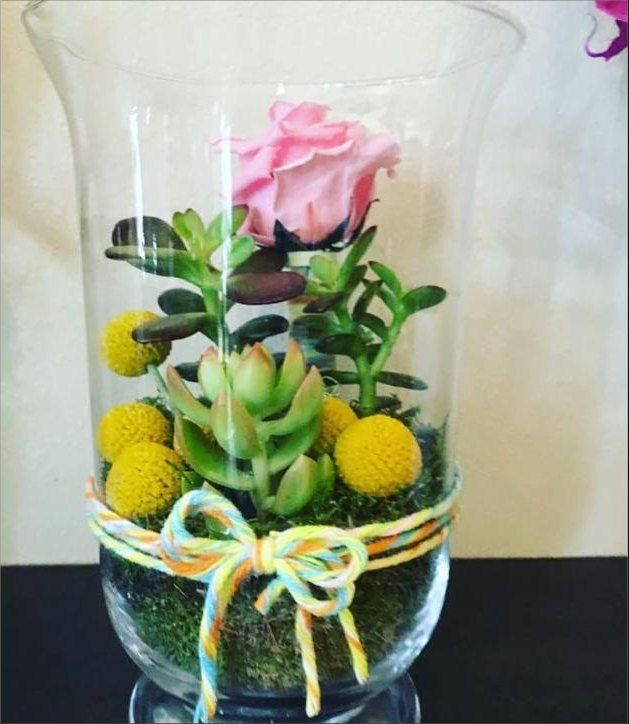
Un aperçu de ce qui sort de nos mains. Chaque pièce est unique : on s'en inspire, on ne la copie pas.
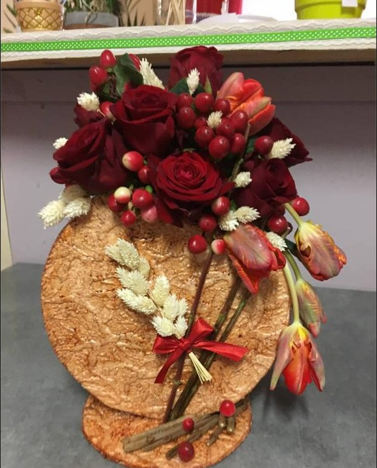
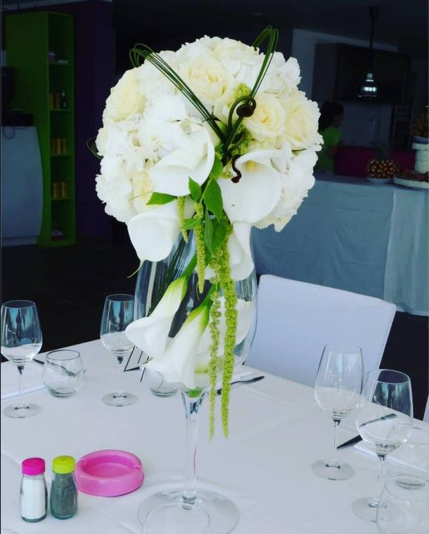
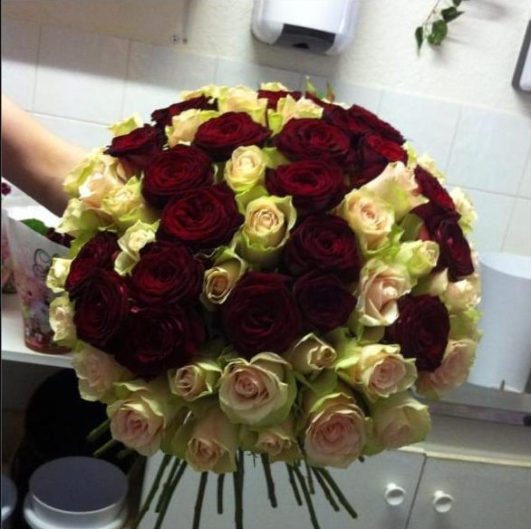
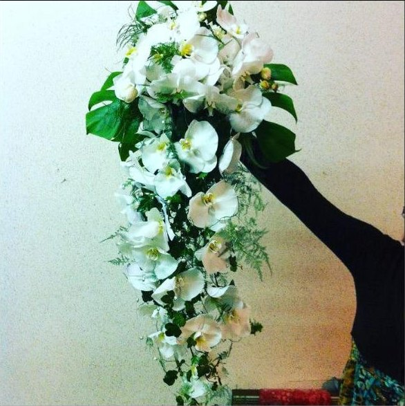
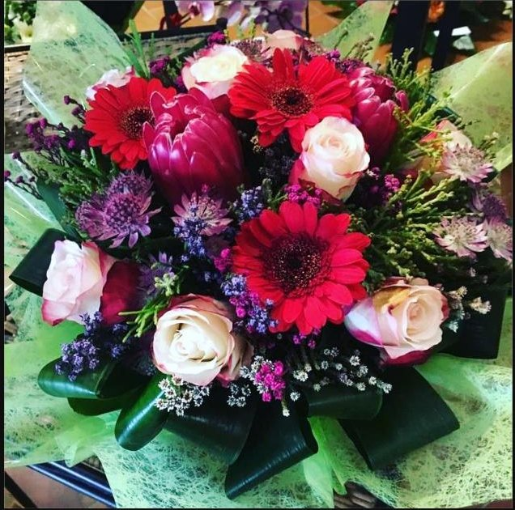
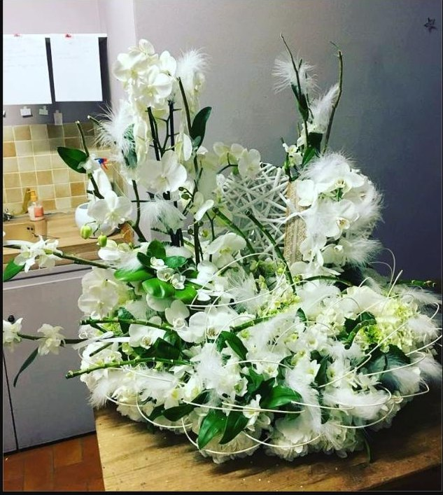
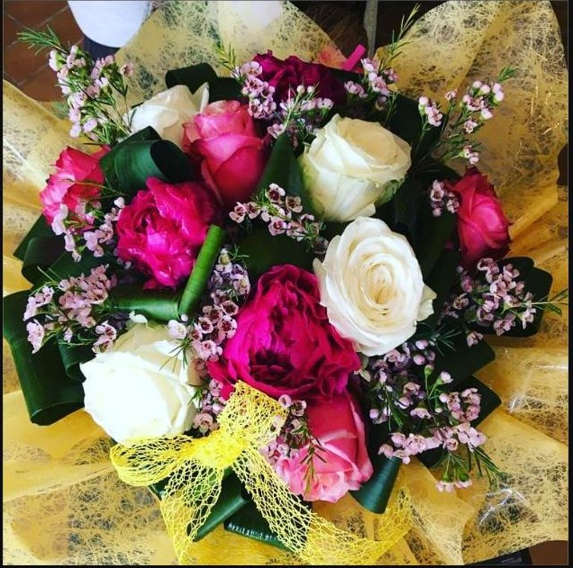
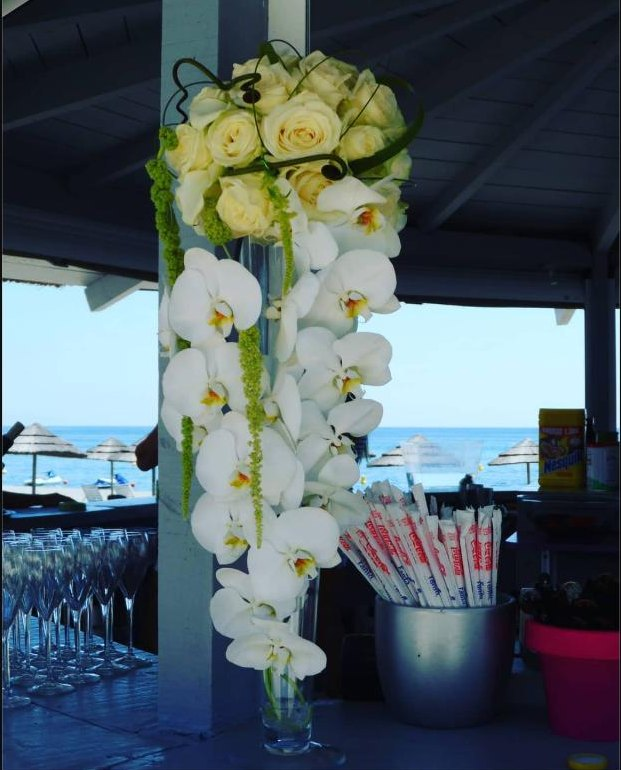
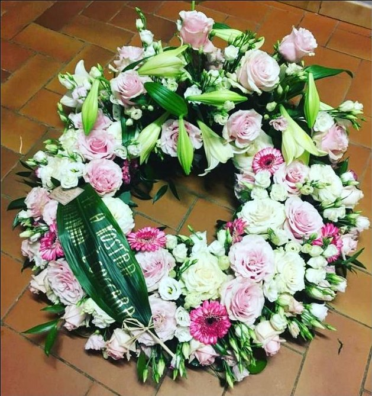
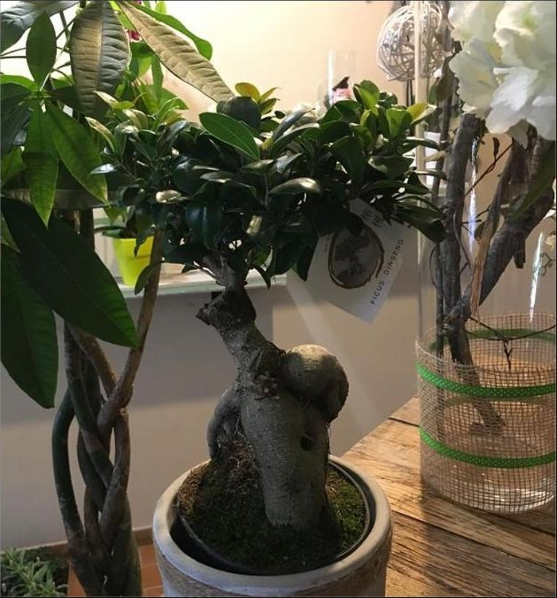
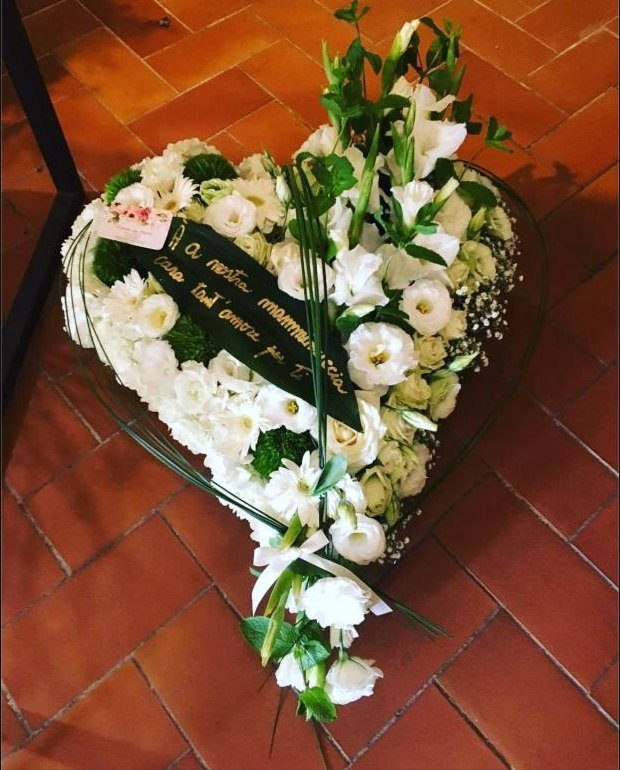
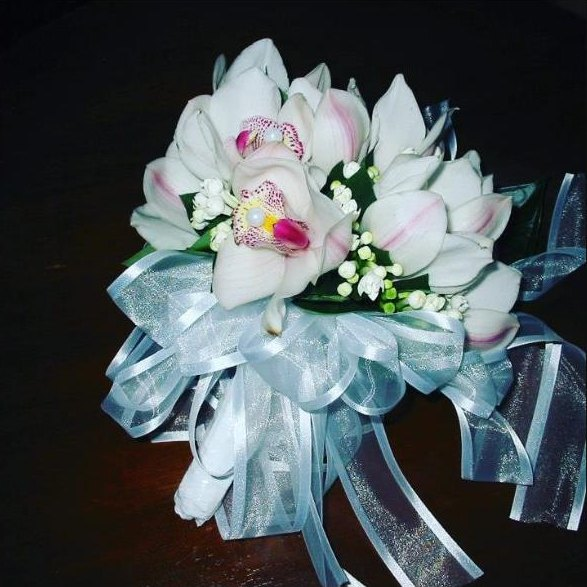
Événements
Pour les grandes occasions, on prend le temps d'en parler avec vous. Toutes les prestations sont réalisées sur commande.
Du bouquet de la mariée à la décoration de la salle.
Un dernier hommage, préparé avec délicatesse.
Saint-Valentin, fête des mères, muguet, commémorations.
Un projet ? Parlons-en.
Appelez Marie au 06 21 53 45 76 pour en discuter.
| Lundi – samedi | 9h00 – 12h00 · 15h00 – 19h00 |
|---|---|
| Dimanche | 9h00 – 12h30 |